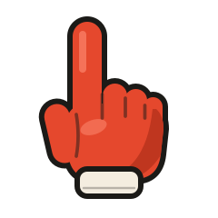
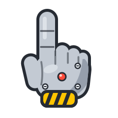
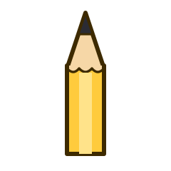
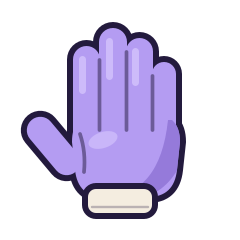

A little hand for your Linux desktop.
It points at things on your screen. Click to tap, drag to draw, scroll and it strokes the page along.
curl -fsSL https://dabane-ghassan.github.io/manicule/install.sh | sh
Paste it in a terminal, then log out and back in once. Version 1.2.0, free and open source, for GNOME 45 or later on any distro.

Point
The hand follows your mouse, on a stick, from the edge of the screen.

Tap
A click is a tap with a soft thock. Nothing underneath gets clicked.

Draw
Hold and drag to draw. Lines fade after three seconds, or pin them to keep writing.

Scroll
The page scrolls as usual, and the hand opens up and pushes it along.
Keys
- Ctrl Alt H
- On or off. The hand in the top bar does the same.
- Ctrl Alt X
- Clear the drawing.
- Hold Alt
- Click for real.
- Ctrl Alt C
- Let every click through.
- Esc
- Put the hand away.
- manicule update
- Get the latest version.
Good to know
- It works over fullscreen. Slides, videos and HTML presentations included, and arrow keys still reach them.
- Thirty pointers. Hands, a magician's glove that snaps your drawings away, a boxing glove, an electrode and a neuron for neuroscience talks, or your own picture.
- It is an app. Find Manicule in your apps, or click the little hand in the top bar.